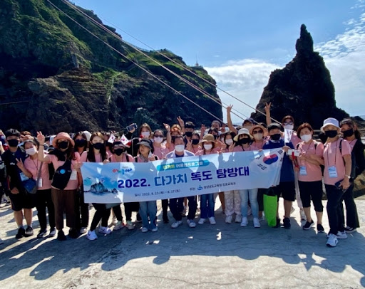

독도는 대한민국 동해에 위치한 아름다운 섬으로, 오랜 역사를 자랑합니다. 독도에 대한 최초의 기록은 삼국사기에 등장합니다. 삼국사기에 따르면 신라 지증왕 13년(512년)에 우산국(울릉도와 독도)이 신라에 복속되었습니다. 이는 독도가 고대부터 우리 민족의 생활권에 속해 있었음을 보여줍니다.
오늘날 독도는 대한민국의 주권을 상징하는 중요한 섬으로, 국민들에게 큰 자부심을 안겨줍니다. 독도에는 독도 경비대가 상주하며, 대한민국의 영토를 지키기 위해 헌신하고 있습니다. 또한, 독도는 관광지로서도 많은 사람들에게 사랑받고 있으며, 매년 많은 관광객들이 독도를 방문하여 그 아름다움을 체험하고 있습니다.
